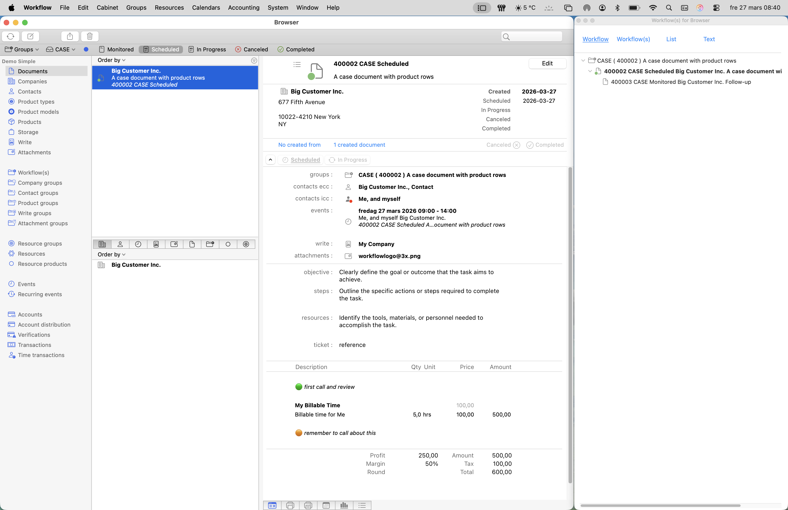
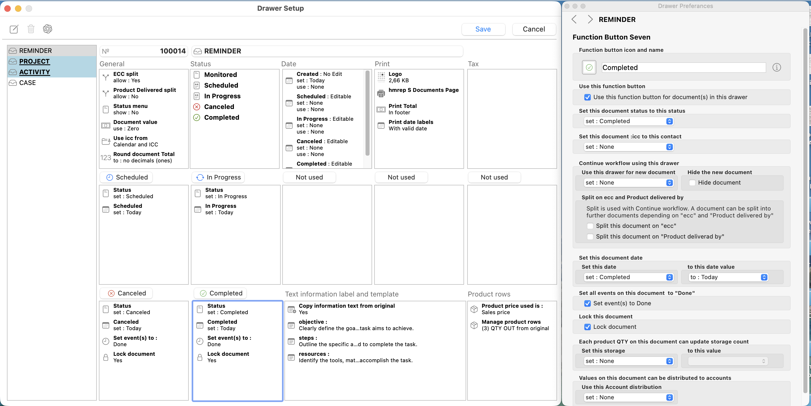
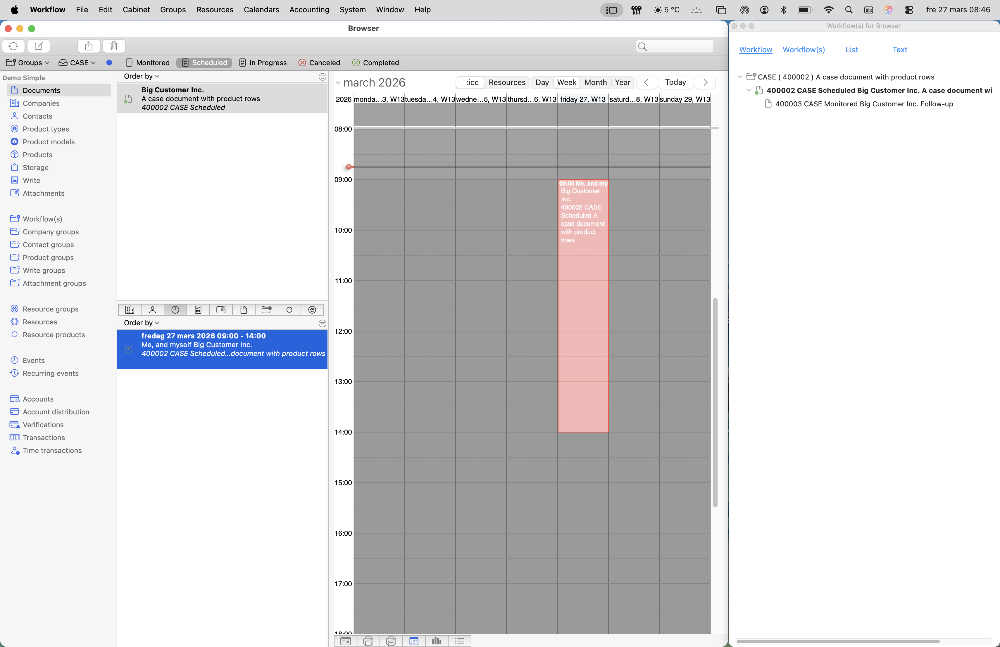
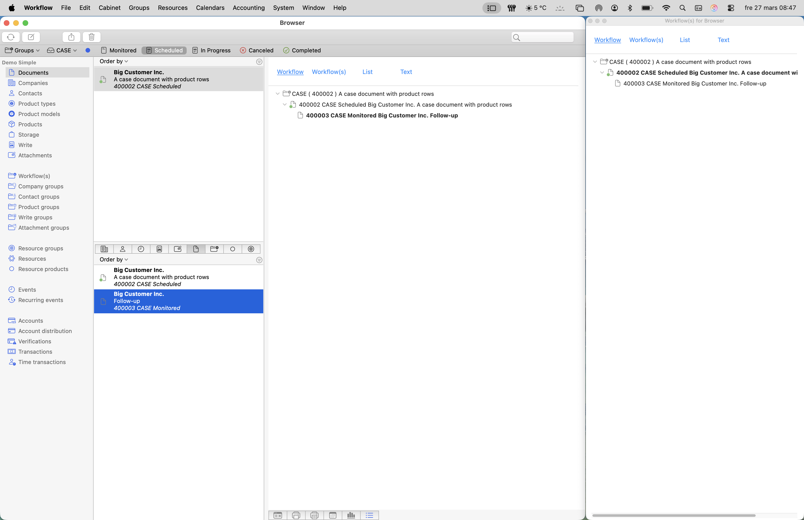

Browser
Browse and inspect records
Filter documents, companies, contacts, and other records in the Browser. Select a record to inspect its details, preview it, and see what it links to.


macOS application
Organize projects, orders, and other document-based work. Set up your own document types and choose how work moves from one stage to the next.
macOS 11 or later · Apple Silicon and Intel · Signed and notarized
Select any screenshot for a closer look, then use the arrows to browse the set.
Browser
Filter documents, companies, contacts, and other records in the Browser. Select a record to inspect its details, preview it, and see what it links to.

Drawer setup
Each drawer defines a document type. Set its statuses, dates, numbering, and action buttons to match the way you handle reminders, projects, orders, or other work.

Calendar view
Drag a document onto a time slot to schedule it. Use the calendar to see when reminders and activities are due alongside other events.

Document structure
Continue work from an existing document by creating a linked follow-up. For example, a completed reminder can lead to an activity. The structure view shows how those records fit together.

On YouTube
Workflow started as a business system for a small computer consulting company. Its developer and his brother adapted it into a general-purpose workflow application. The macOS edition is available free of charge.
PLEASE READ THIS LICENSE CAREFULLY BEFORE USING THE SOFTWARE.
BY DOWNLOADING, INSTALLING, OR USING WORKFLOW, YOU AGREE TO BE BOUND BY THIS LICENSE.
IF YOU DO NOT AGREE, DO NOT DOWNLOAD, INSTALL, OR USE THE SOFTWARE.
"Software" means the Workflow application distributed in compiled binary form for macOS.
Workflow is provided free of charge.
You may download and use the Software for personal or professional purposes for as long as you wish.
You may redistribute the unmodified original application package at no charge, provided this license and all copyright notices are included.
You may not modify, reverse engineer, decompile, disassemble, or redistribute modified versions of the Software, except where such restriction is prohibited by applicable law.
All rights not expressly granted remain reserved.
THE SOFTWARE IS PROVIDED "AS IS", WITH ALL FAULTS, AND WITHOUT WARRANTY OF ANY KIND.
TO THE MAXIMUM EXTENT PERMITTED BY APPLICABLE LAW, ALL WARRANTIES, WHETHER EXPRESS, IMPLIED, OR STATUTORY, INCLUDING WITHOUT LIMITATION IMPLIED WARRANTIES OF MERCHANTABILITY, FITNESS FOR A PARTICULAR PURPOSE, AND NON-INFRINGEMENT, ARE DISCLAIMED.
THE AUTHOR MAKES NO GUARANTEE THAT THE SOFTWARE WILL BE ERROR-FREE, SECURE, UNINTERRUPTED, OR COMPATIBLE WITH ANY CURRENT OR FUTURE SOFTWARE OR OPERATING SYSTEM.
USE OF THE SOFTWARE IS ENTIRELY AT YOUR OWN RISK.
The author may update, modify, suspend, or discontinue the Software at any time and for any reason.
There is no obligation to provide updates, bug fixes, support, maintenance, or continued availability.
TO THE MAXIMUM EXTENT PERMITTED BY APPLICABLE LAW, IN NO EVENT SHALL THE AUTHOR BE LIABLE FOR ANY DAMAGES WHATSOEVER, INCLUDING WITHOUT LIMITATION LOSS OF DATA, LOSS OF PROFITS, BUSINESS INTERRUPTION, INDIRECT, INCIDENTAL, SPECIAL, CONSEQUENTIAL, OR PUNITIVE DAMAGES, ARISING OUT OF OR RELATED TO THE USE OF OR INABILITY TO USE THE SOFTWARE, EVEN IF ADVISED OF THE POSSIBILITY OF SUCH DAMAGES.
The Software is not intended for use in any context where failure could cause personal injury, property damage, regulatory non-compliance, or other significant harm.
You are solely responsible for verifying all results, decisions, and actions taken using the Software.
The Software does not intentionally include analytics or tracking functionality.
Network activity may still occur due to normal macOS platform behavior or underlying runtime components, which are outside the author's control.
This license is effective until terminated.
It terminates automatically if you fail to comply with any term of this agreement.
Upon termination, you must stop using the Software and delete all copies in your possession or control.
This agreement is governed by the laws of Sweden, without regard to conflict-of-law rules.
If you are a consumer, this choice of law does not deprive you of mandatory protections under the law of your country of residence.
If any provision of this agreement is held unenforceable, the remaining provisions will remain in full force and effect.
Copyright (c) 2026
All rights reserved.